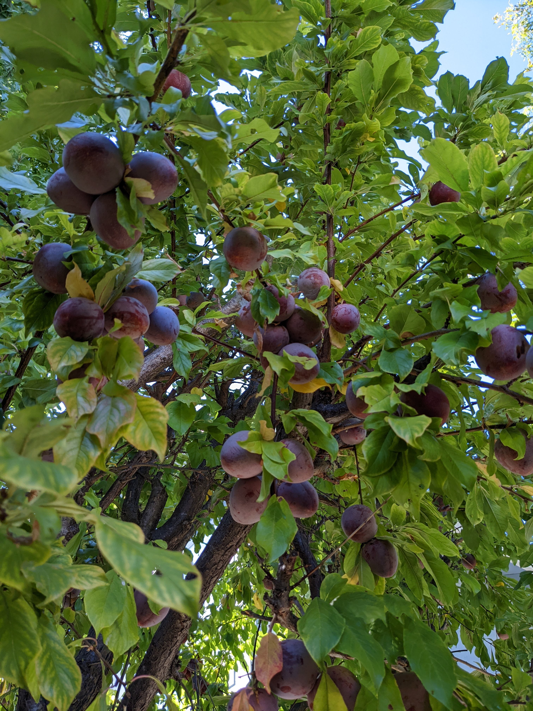
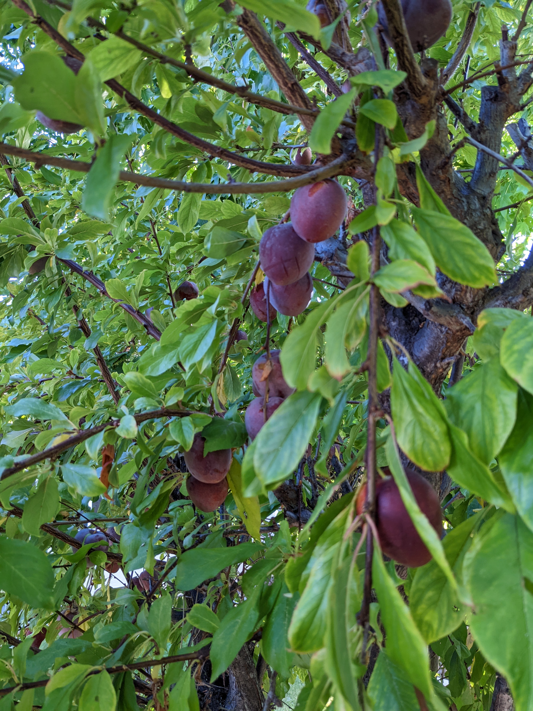
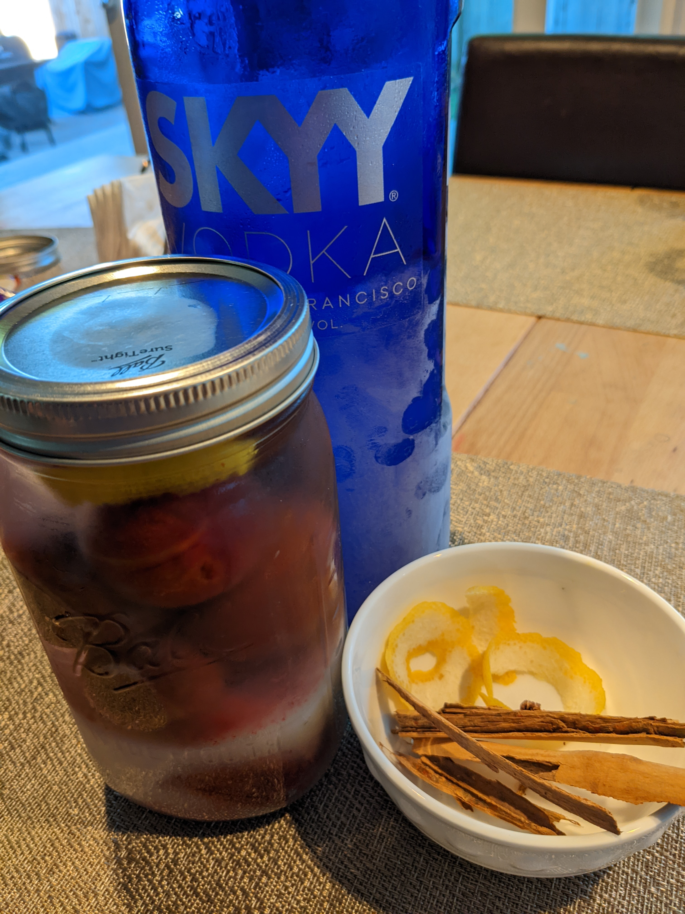
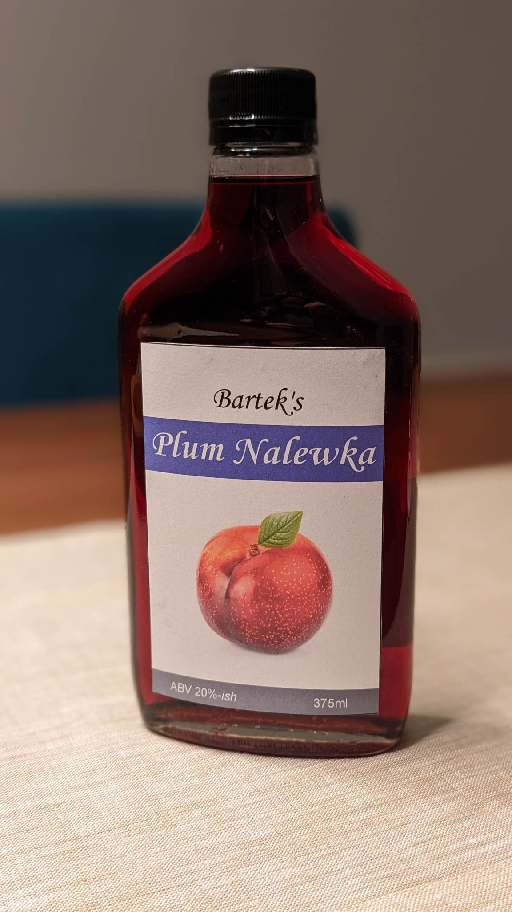

Bartek's Plum Nalewka
How it's made
Plums
It starts with the plums that come directly from my backyard.


Pick'em, wash them...

Other Ingredients
Next steps
- Make cuts on plums
- Put plums in a mason jar
- Add lemon zest, cinnamon sticks
- Add sugar
- Fill the jar with vodka (or spirit if you want it super strong)



Wait...
The jars have to be stored in sunlight for ~2 weeks. Turn them over daily, until all of the sugar disolves.
Store jars in a dark place (e.g. pantry) for ~3-4 months
[... sorry, no photos of this part ...]
Pour
Pour from the jars into bottles, remember to use a fine strainer or a coffee filter.
Now it's ready!

FAQ
- What is a "nalewka"?
- It's a Polish alcoholic drink made by macerating fruit in a netutral alcohol such as vodka or spirit.
It's similar to infused vodka, but the fruit has to macerate much longer (3-4 months instead of 3-4 days).
Unlike liqueurs, it's using the whole fruit, not just fruit juice extract.
- Why 20%-ish ABV?
- Rough estimate based on the fact, that there's 40% vodka, juice from the plums and sugar,
yieldking about twice as much liquid as amount of vodka used.
- Is it vegetarian, vegan?
- All of the ingredients used are plant based. Grain vodka, cane sugar, plums, cinnamon, and lemon zest.
I haven't specifically looked for vegan certified ones.
- Is it gluten free?
- Yes. I've used Skyy Vodka and Kirkland American Vodka. Even though Skyy Vodka is made of wheat it's cerified gluten free, as the distillation removes any gluten.
Kirkland American Vodka is made of corn, and also is cerified gluten free.
- Will you make more?
- Not until next fall, when I have next harvest on the plums.